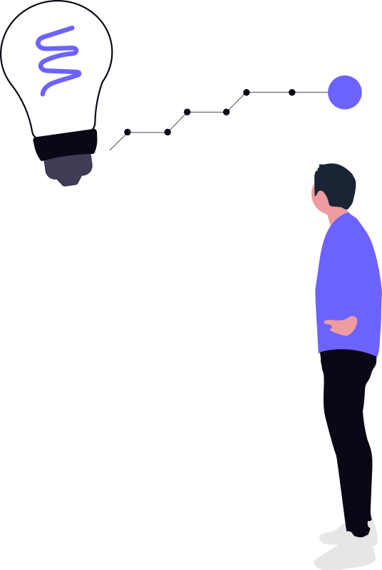

Recomeçar
Recomeçar é dar uma nova chance a si mesmo. É renovar as esperanças na vida e o mais importante: acreditar em você de novo.
Recomeçar é dar uma nova chance a si mesmo. É renovar as esperanças na vida e o mais importante: acreditar em você de novo.
